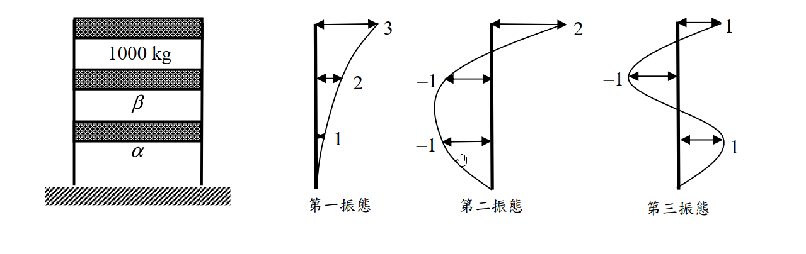

考題編號：SD-2016-3
主分類： SD-U1-3 單自由度、多自由度系統之動態分析及應用
副分類： SD-U1-1 結構動力基本性質及原理
分析方法： 概念題（含計算）
標籤： MDOF 3自由度 剪力建築 模態正交性 振態向量 質量矩陣逆推 已知振態求質量 M正交性條件
1. 原始題目重述 (Problem Restatement)
結構描述
三層樓建築物，各層質量如下：
- 第一層（底層）：質量 $\alpha$（待求）
- 第二層（中層）：質量 $\beta$（待求）
- 第三層（頂層）：質量 $m = 10^3\ \text{kg} = 1000\ \text{kg}$（已知）
三個振態的樓層位移示意如圖所示（自由度編號由底層至頂層：$u_1, u_2, u_3$）：

圖說：第一振態 $\{\phi_1\} = \{1,\ 2,\ 3\}^T$（各層同向，由底至頂遞增）；第二振態 $\{\phi_2\} = \{-1,\ -1,\ 2\}^T$（底層與中層反向，頂層正向）；第三振態 $\{\phi_3\} = \{1,\ -1,\ 1\}^T$（底層正向、中層反向、頂層正向）。
子問題
- （一） 求第一層和第二層的質量為何，亦即 $\alpha = ?\ \beta = ?$（10 分）
- （二） 說明計算原理（5 分）
2. 考題核心精神與出題者意圖 (Core Concepts & Examiner's Intent)
核心觀念
本題是「已知振態，逆向求質量」的模態正交性應用題。核心工具：
$$\{\phi_i\}^T [M] \{\phi_j\} = 0 \quad (i \neq j)$$
此條件由結構動力學的運動方程式推導而來（特徵值問題的固有性質），稱為振態的質量正交性（M-orthogonality）。
出題者意圖
- 考驗考生「正交性條件能反向利用」的靈活度：通常我們先知道 $[M]$ 再求 $\{\phi\}$，本題反其道而行
- 從三個振態中選任兩對（最自然的選法：振態一分別與振態二、三配對），各得一條線性方程，聯立解出兩個未知數
- 「說明計算原理」（5分）要求考生清楚陳述模態正交性的物理基礎：不同自然頻率對應的振態在質量矩陣（或剛度矩陣）意義下互相正交
3. 解題戰略地圖與陷阱分析 (Strategic Roadmap & Trap Analysis)
步驟作戰計畫
Step 1: 確認振態向量（由圖讀取各樓層的相對位移值及方向）
Step 2: 寫出正交性條件 {φ₁}ᵀ[M]{φ₂} = 0 → 第一個線性方程（含 α, β）
Step 3: 寫出正交性條件 {φ₁}ᵀ[M]{φ₃} = 0 → 第二個線性方程（含 α, β）
Step 4: 聯立求解 α 和 β
Step 5: 說明原理（模態正交性的推導依據）
關鍵陷阱
| # | 陷阱 | 錯誤做法 | 正確做法 |
|---|---|---|---|
| 1 | 振態方向符號讀錯 | 把 $\{-1,-1,2\}$ 讀為 $\{1,1,2\}$ | 圖中向左為負，向右為正，認真判斷符號 |
| 2 | 樓層與振態分量對應錯誤 | 把第三層的值對應到 $\alpha$（底層） | $u_1 = \alpha$（底層），$u_3 = m = 1000\ \text{kg}$（頂層） |
| 3 | 正交性條件列錯 | 寫成 $\{\phi\}^T\{\phi\} = 0$（未加 $[M]$） | 必須是 $\{\phi_i\}^T [M] \{\phi_j\} = 0$（質量加權正交） |
| 4 | 三條方程只用一條 | 只用一個振態對求解（方程不足） | 需兩個獨立方程（2 個未知數 → 需 2 條正交性條件） |
3.5 變數層次分析 (Variable Hierarchy Analysis)
複習提示：第一次解題後，在每個卡住的知識點旁標記
⚠；第二次複習時只看有⚠的項目。
最終目標
由三個已知振態，利用模態正交性，聯立求解底層質量 α 和中層質量 β
本題關鍵公式（依計算順序）
$$\text{Step 1: 模態質量正交性條件}$$
$$\{\phi_i\}^T [M] \{\phi_j\} = 0 \quad (i \neq j)$$
$$\text{Step 2: 展開（振態一 vs 振態二）}$$
$$\phi_{1,1}\cdot\phi_{2,1}\cdot\alpha + \phi_{1,2}\cdot\phi_{2,2}\cdot\beta + \phi_{1,3}\cdot\phi_{2,3}\cdot m = 0$$
$$\text{Step 3: 展開（振態一 vs 振態三）}$$
$$\phi_{1,1}\cdot\phi_{3,1}\cdot\alpha + \phi_{1,2}\cdot\phi_{3,2}\cdot\beta + \phi_{1,3}\cdot\phi_{3,3}\cdot m = 0$$
$$\text{Step 4: 聯立兩方程求 }\alpha\text{ 和 }\beta$$
L1：題目直接給定
| 符號 | 數值 | 說明 |
|---|---|---|
| $m$ | $1000\ \text{kg}$ | 頂層質量（第三層） |
| $\{\phi_1\}$ | $\{1,\ 2,\ 3\}^T$ | 第一振態（底→頂） |
| $\{\phi_2\}$ | $\{-1,\ -1,\ 2\}^T$ | 第二振態（底→頂） |
| $\{\phi_3\}$ | $\{1,\ -1,\ 1\}^T$ | 第三振態（底→頂） |
L2：需知識點推導
Step 1：列出正交性條件（振態一 vs 振態二）
| 符號 | 公式／來源 | 卡關? |
|---|---|---|
| $\{\phi_1\}^T[M]\{\phi_2\}$ | $(1)(-1)\alpha + (2)(-1)\beta + (3)(2)(1000) = 0$ | |
| 化簡 | $-\alpha - 2\beta + 6000 = 0$ | |
| 方程 I | $\alpha + 2\beta = 6000$ |
Step 2：列出正交性條件（振態一 vs 振態三）
| 符號 | 公式／來源 | 卡關? |
|---|---|---|
| $\{\phi_1\}^T[M]\{\phi_3\}$ | $(1)(1)\alpha + (2)(-1)\beta + (3)(1)(1000) = 0$ | |
| 化簡 | $\alpha - 2\beta + 3000 = 0$ | |
| 方程 II | $\alpha - 2\beta = -3000$ |
Step 3：聯立求解
| 符號 | 公式／來源 | 卡關? |
|---|---|---|
| (I) + (II) | $2\alpha = 3000$ | |
| $\alpha$ | $1500\ \text{kg}$ | |
| $\beta$ | $(6000 - 1500)/2 = 2250\ \text{kg}$ |
L3：深層知識（不懂就卡住）
| 知識點 | 說明 | 卡關? |
|---|---|---|
| 模態質量正交性的推導 | 來自特徵值方程 $[K]\{\phi\} = \omega^2[M]\{\phi\}$；對 $i \neq j$ 互乘後相減，利用 $[K],[M]$ 對稱性即得 $(\omega_i^2-\omega_j^2)\{\phi_i\}^T[M]\{\phi_j\}=0$；因 $\omega_i \neq \omega_j$，故 $\{\phi_i\}^T[M]\{\phi_j\}=0$ | |
| 正交性只適用於不同頻率的振態 | 若 $\omega_i = \omega_j$（退化，重頻），模態不一定正交 | |
| 為何選振態一配對 | 振態一的分量 $\{1,2,3\}$ 全為正，展開後方程較乾淨（兩個未知數各有獨立係數，便於求解） |
4. 步驟化詳細計算過程 (Step-by-Step Detailed Calculation)
(一) 求 α 和 β
建立質量矩陣符號
$$[M] = \begin{bmatrix}\alpha & 0 & 0 \\ 0 & \beta & 0 \\ 0 & 0 & m\end{bmatrix}, \quad m = 1000\ \text{kg}$$
自由度順序：$u_1$（第一層，質量 $\alpha$），$u_2$（第二層，質量 $\beta$），$u_3$（第三層，質量 $m$）。
振態向量（由圖讀取，底層至頂層）：
$$\{\phi_1\} = \begin{Bmatrix}1\\2\\3\end{Bmatrix},\quad \{\phi_2\} = \begin{Bmatrix}-1\\-1\\2\end{Bmatrix},\quad \{\phi_3\} = \begin{Bmatrix}1\\-1\\1\end{Bmatrix}$$
條件一：振態一與振態二之質量正交性
$$\{\phi_1\}^T [M] \{\phi_2\} = 0$$
$$\begin{bmatrix}1 & 2 & 3\end{bmatrix} \begin{bmatrix}\alpha & 0 & 0 \\ 0 & \beta & 0 \\ 0 & 0 & 1000\end{bmatrix} \begin{Bmatrix}-1\\-1\\2\end{Bmatrix} = 0$$
展開：
$$(1)(-1)\alpha + (2)(-1)\beta + (3)(2)(1000) = 0$$
$$-\alpha - 2\beta + 6000 = 0$$
$$\boxed{\alpha + 2\beta = 6000} \quad \cdots \text{(I)}$$
條件二：振態一與振態三之質量正交性
$$\{\phi_1\}^T [M] \{\phi_3\} = 0$$
$$\begin{bmatrix}1 & 2 & 3\end{bmatrix} \begin{bmatrix}\alpha & 0 & 0 \\ 0 & \beta & 0 \\ 0 & 0 & 1000\end{bmatrix} \begin{Bmatrix}1\\-1\\1\end{Bmatrix} = 0$$
展開：
$$(1)(1)\alpha + (2)(-1)\beta + (3)(1)(1000) = 0$$
$$\alpha - 2\beta + 3000 = 0$$
$$\boxed{\alpha - 2\beta = -3000} \quad \cdots \text{(II)}$$
聯立求解
方程 (I) 加方程 (II)：
$$2\alpha = 6000 + (-3000) = 3000$$
$$\boxed{\alpha = 1500\ \text{kg}}$$
代回方程 (I)：
$$1500 + 2\beta = 6000 \implies 2\beta = 4500$$
$$\boxed{\beta = 2250\ \text{kg}}$$
(二) 計算原理說明
模態質量正交性（Modal Mass Orthogonality）的物理根源如下：
1. 運動方程的特徵值形式
對無阻尼自由振動系統 $[M]\ddot{\mathbf{u}} + [K]\mathbf{u} = \mathbf{0}$，設解為 $\mathbf{u}(t) = \{\phi\}e^{i\omega t}$，得到特徵值方程：
$$[K]\{\phi_i\} = \omega_i^2 [M]\{\phi_i\} \quad \cdots (*)$$
2. 正交性推導
對第 $i$ 振態方程左乘 $\{\phi_j\}^T$，對第 $j$ 振態方程左乘 $\{\phi_i\}^T$：
$$\{\phi_j\}^T [K] \{\phi_i\} = \omega_i^2 \{\phi_j\}^T [M] \{\phi_i\}$$
$$\{\phi_i\}^T [K] \{\phi_j\} = \omega_j^2 \{\phi_i\}^T [M] \{\phi_j\}$$
由於 $[K]$、$[M]$ 均為對稱矩陣，故：
$$\{\phi_j\}^T [K] \{\phi_i\} = \{\phi_i\}^T [K] \{\phi_j\}$$ $$\{\phi_j\}^T [M] \{\phi_i\} = \{\phi_i\}^T [M] \{\phi_j\}$$
兩式相減：
$$(\omega_i^2 - \omega_j^2)\,\{\phi_i\}^T [M] \{\phi_j\} = 0$$
若 $\omega_i \neq \omega_j$（不同振態對應不同自然頻率），則：
$$\boxed{\{\phi_i\}^T [M] \{\phi_j\} = 0 \quad (i \neq j)}$$
3. 本題應用
已知三個振態向量與頂層質量 $m = 1000\ \text{kg}$，質量矩陣中有兩個未知數 $\alpha,\beta$。利用任意兩對振態的正交性，各產生一個線性方程，聯立即可唯一確定 $\alpha$ 和 $\beta$。
5. 關鍵爭議點與進階探討 (Critical Issues & Advanced Discussion)
5.1 選用哪兩對振態？
本題有三對可用的正交性條件：
- 振態 1 × 振態 2：方程 (I)
- 振態 1 × 振態 3：方程 (II)
- 振態 2 × 振態 3：方程 (III)
使用 (I) 和 (II) 聯立，解出 $\alpha = 1500\ \text{kg}$、$\beta = 2250\ \text{kg}$。這是考場上最自然的選法（振態一分量全正，展開式最乾淨）。
5.2 三個正交性條件的一致性
理論上，一個物理上可行的 MDOF 系統，其三個振態應對任意質量矩陣均滿足全部三對正交性條件。本題只有兩個未知數（$\alpha$, $\beta$），因此三個方程中只有兩個線性獨立，第三個應可由前兩個推導出來（冗餘方程）。
考場上最安全、最推薦的做法：選振態一與振態二、振態一與振態三配對（兩條方程均含 $\alpha$ 和 $\beta$，係數最清楚），聯立求解。
5.3 模態正交性的物理直覺
不同振態對應不同的「振動模式」。在結構振動中，不同模式之間不存在能量傳遞——第一振態（整體前後搖擺）與第二振態（高頻局部振動）的動能互相正交。這正是模態疊加法能將多自由度系統解耦成獨立 SDOF 系統的數學基礎。
5.4 答案驗算
$$\frac{\alpha}{m} = \frac{1500}{1000} = 1.5, \quad \frac{\beta}{m} = \frac{2250}{1000} = 2.25$$
底層最重（$\alpha > \beta$... 等等，$\alpha = 1500 < \beta = 2250$），實際上中層最重。從結構設計角度這是合理的，例如設備機房設在中間層的建築物。
振態一係數 1:2:3 反映了底層到頂層的位移比，此時中層較重（$\beta > \alpha$）使得振態在中層的振幅相對被「壓制」，仍形成單調遞增形狀。